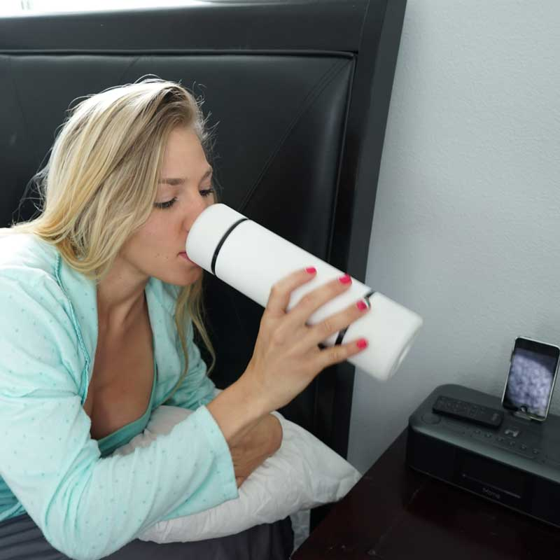

Overview
BREWnGo is an automatic portable coffee and tea brewing system that you can take on the go to enjoy your favorite beverage. BREWnGO Technologies is founded by 2 graduate students who both enjoy a good cup of coffee or tea, but seeked a solution that is easy and portable. With backgrounds in engineering and business, they created BREWnGO (or currently on the website as Bruvida) that allows the user to use their mobile device to customize how they want their tea or coffee brewed in a seamless and convenient system.
Role
Designer
Website

Team
ABOUT
BREWnGo is an automatic portable coffee and tea brewing system that you can take on the go to enjoy your favorite beverage. BREWnGO Technologies is founded by 2 graduate students who both enjoy a good cup of coffee or tea, but seeked a solution that is easy and portable. With backgrounds in engineering and business, they created BREWnGO (or currently on the website as Bruvida) that allows the user to use their mobile device to customize how they want their tea or coffee brewed in a seamless and convenient system.
The current website is here:
The current website is here:
PROBLEM
Coffee and tea has long been a staple in many cultures diets, and almost necessary to those with an active lifestyle, whether rushing to work to beat morning traffic to the office, or just those who need their daily energy supply to kickstart their days. People have to take time out of their days to go through the functions of working their current brewing systems to make their beverages, and then transfer them over to thermos or cups to able to drink them and bring them on the go. This is the problem for those in a hurry; it can take too long and may be difficult to get their cup of energy, and simply buying beverages at shops is time and money consuming, as well as detrimental to the environment in terms of where the waste goes.
SOLUTION
BREWnGO, a one trick pony, that not only brews your favorite beverage, but one that can brew on the go, whereever and whenever, even brewing right before you wake up. Load your favorite coffee or tea into the canister and pour water, then use your mobile device to set the brewing and drinking temperatures, type of tea, brewing time, and alarms if needed to enjoy your customized and consistent beverage. With this, you can set it up to be ready when you wake up or in the car to get that boost of energy you need. Using your smartphone, this makes the experience easier, faster, and more convenient than ever as compared to using your system at home. With its 100% biodegradable paper pods, you can rest at ease knowing you aren't harming the environment.



USER PERSONAS
We used a spreadsheet and used X's to determine which values may be relevant to each type of person as shown below, to determine our personas and even sub personas on who our product would be best targeted towards.
On The Go
We defined these people as those who often have busy schedules or lifestyle requires being actively moving. We decided that the users who may fall under this category include students, travelers, young parents, those who have long commutes and or use public transportation, social people, those who don't work at desks, and those with irregular work hours.
Gadgeteers
We defined this set of users to be those who enjoy having the latest and greatest gadgets. We felt that those who may fall under this category would be kickstarter/indiegogo frequenters, connectors (those who like to review or blog), showoffs, people who value large and small improvements, the "new" is always better, and the Bourgeois.
Young Professionals
We defined this group of users who enjoy nice aesthetic yet functional things in life that help them get through their day at work and at home. We decided that under this category would be the college educated, desk workers, successful people, "hipsters", those who live in populated areas, and of course the Millenials.
Tea and Coffee Enthusiasts
Last but not least, we defined this group of users who are the connossieurs of coffee and tea, who seek the best, the fresh, and the quality in the beverages they enjoy. We decided that this category consists of craft lovers (aka not Starbucks), whole foods/trader joes/sprouts shoppers, expensive coffee/tea brewers, those who buy the more serious drinks, and beverage enthusiasts.
With these main 4 personas, and the sub personas within them, we tried to map out the target audience that this product would appeal most to. It seemed that the coffee and tea enthuasiasts would be the main audience, but students, those who support indie projects, and Millenials in general would also be part of the audience as well. Sorting and analyzing through this helped us try to focus more on branding and functionality.
On The Go
We defined these people as those who often have busy schedules or lifestyle requires being actively moving. We decided that the users who may fall under this category include students, travelers, young parents, those who have long commutes and or use public transportation, social people, those who don't work at desks, and those with irregular work hours.
Gadgeteers
We defined this set of users to be those who enjoy having the latest and greatest gadgets. We felt that those who may fall under this category would be kickstarter/indiegogo frequenters, connectors (those who like to review or blog), showoffs, people who value large and small improvements, the "new" is always better, and the Bourgeois.
Young Professionals
We defined this group of users who enjoy nice aesthetic yet functional things in life that help them get through their day at work and at home. We decided that under this category would be the college educated, desk workers, successful people, "hipsters", those who live in populated areas, and of course the Millenials.
Tea and Coffee Enthusiasts
Last but not least, we defined this group of users who are the connossieurs of coffee and tea, who seek the best, the fresh, and the quality in the beverages they enjoy. We decided that this category consists of craft lovers (aka not Starbucks), whole foods/trader joes/sprouts shoppers, expensive coffee/tea brewers, those who buy the more serious drinks, and beverage enthusiasts.
With these main 4 personas, and the sub personas within them, we tried to map out the target audience that this product would appeal most to. It seemed that the coffee and tea enthuasiasts would be the main audience, but students, those who support indie projects, and Millenials in general would also be part of the audience as well. Sorting and analyzing through this helped us try to focus more on branding and functionality.
COMPETITIVE ANALYSIS
Ember
Ember Tech has developed a mug that controls beverage temperatures with the use of a smartphone, however does not actually brew the beverage itself. The idea behind it is that it can control the temperature and keep it constant to provide a pleasant consistent drinking experience. The design of the mug is very clean and has no buttons, except for a temperature display. This provides a seamless user experience that minimizes any confusion of how the mug itself works. It's designed to be similar to a ceramic mug to give it that experience, and is engineered to be sipped from any side of the lip. Overall, it is indeed a beautifully simple design as advertised.
Ember App
Now for the app, unfortunately I don't own the Ember mug so I couldn't get passed the bluetooth connectivity message needed to connect the mug to a smartphone in order to proceed to the main menu. However, judging from the app screens from the App Store, the design is clean and simple, and follows the signature color scheme. You can choose your presets, adjust your temperatures and edit your mug name and temperature units in the settings page. However, it fails a few of the usability heuristics.
Firstly, it fails the "Recognition rather than recall" heuristic because
1. Hamburger menu: Users may not know what's in that menu nor may not recall its contents unless they use the app frequently over time.
2. Temperature: Users may not know which temperature is the current or desired temperature.
Secondly, it fails the "Help and documentation" heuristic because at least from what I see, there is no help or documentation anywhere in the app, not even in the settings page.
Overall, the design of both the app and mug are exceptional, and offers minimalism, ease, and convenience.
Teforia
Teforia has developed a tea brewing system centered around minimalism, ease, and brewing quality tea for the true enthusiast. Its design is sleek, modern, and new which offers a classy and fun way of brewing and enjoying tea. The system can connect to the app on a smartphone to customize tea as well. The way the app knows about the tea being brewed, is that the tea must be scanned before putting it in the system. The main idea behind Teforia, is to bring the highest of quality teas to brew, so this system is definitely targeting the tea enthusiasts who may enjoy their drinks at the comfort of their own home, rather than having portability as one of its main values.
Teforia App
The app is minimal and clean in design that matches the system itself, and provides documentation that teaches a new user about the system right from the beginning of the app. It also achieves the heuristics: "visibility of system status" because it has icons and words for whether it's connected which also passes the "help users recognize, diagnose, and recover from errors" and "error prevention" heuristics. It also passes the "user control and freedom" heuristic in that you can customize and create your own types of teas and all the necessary information needed to document them, as well as a shop page for purchasing tea. The only heuristics it does not seem to pass are "recognition rather than recall" as the bottom navigation bar only has icons which may be vague to newcomers, and has no text display to show what each page is. The "flexibility and efficiency of use" may also fail the evaluation due to having many pages and options to choose from that may be overwhelming and confusing, however it does provide back and exit buttons which help with the flow in case a user may need to go back or cancel.
Overall, the system is very upscale and beautifully designed and does appeal to the tea enthusiasts in almost every aspect they may want and need. The app is minimal and designed nicely as well. However, the weak point in this design is that it is not portable, although it is also not their intention in the first place.
DESIGN
Unfortunately, I was only able to get to the sketching process. I took design cues and ideas from both Ember and Teforia, being that it has a simple timer and temperature display with the ability to adjust them and make presets. You could also customize and document the coffee and teas you drink just like Teforia.
Reason being that I only got to this point was that everyone in the internship including the founders all got busy with what's on their plates, and currently BREWnGO is inactive. We have not continued working on the designs for a while now.
Reason being that I only got to this point was that everyone in the internship including the founders all got busy with what's on their plates, and currently BREWnGO is inactive. We have not continued working on the designs for a while now.